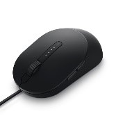
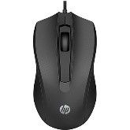

Catálogo de Produtos
| Foto | Código | Descrição | Qtde em estoque | Valo Unitário | |
|---|---|---|---|---|---|
|  | 1 | Mouse Laser com fio Dell | 5 | R$ 179,00 | |
 |
2 | Mouse Bluetooth Dell | 6 | R$ 338,00 | |
|  | 3 | Mouse óptico usb preto 100 | 3 | R$ 48,30 |
Descrição
Características do Produto
Sensor óptico preciso com 1.600 DPI permite que você trabalhe na maioria das superfícies Configuração USB rápida e fácil com cabo de 1,5m Design ambidestro, produzido para caber de forma natural e perfeita na palma da sua mão Três botões integrados Ampla compatibilidade: Windows e Mac
Avaliação do produto
- José Aparecido
- Muito bom
- Joaquim Jorge
- Bom